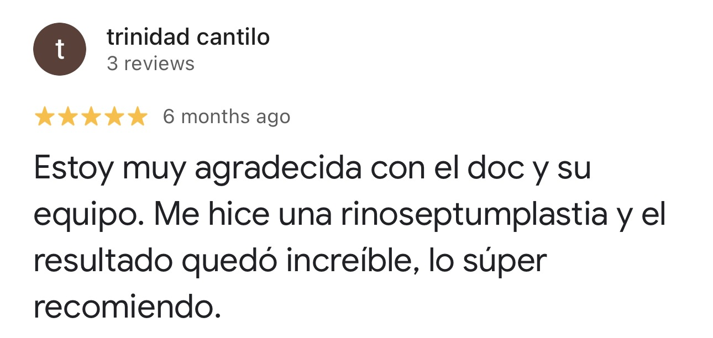
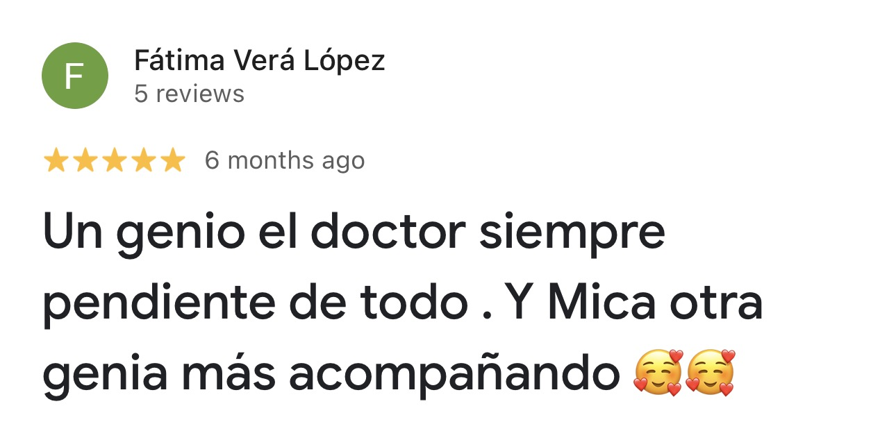
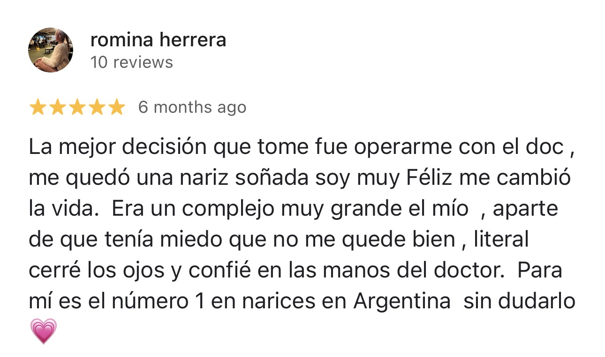
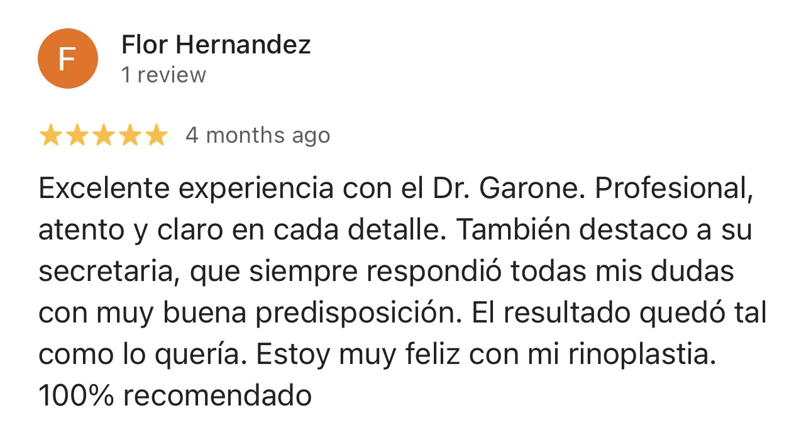
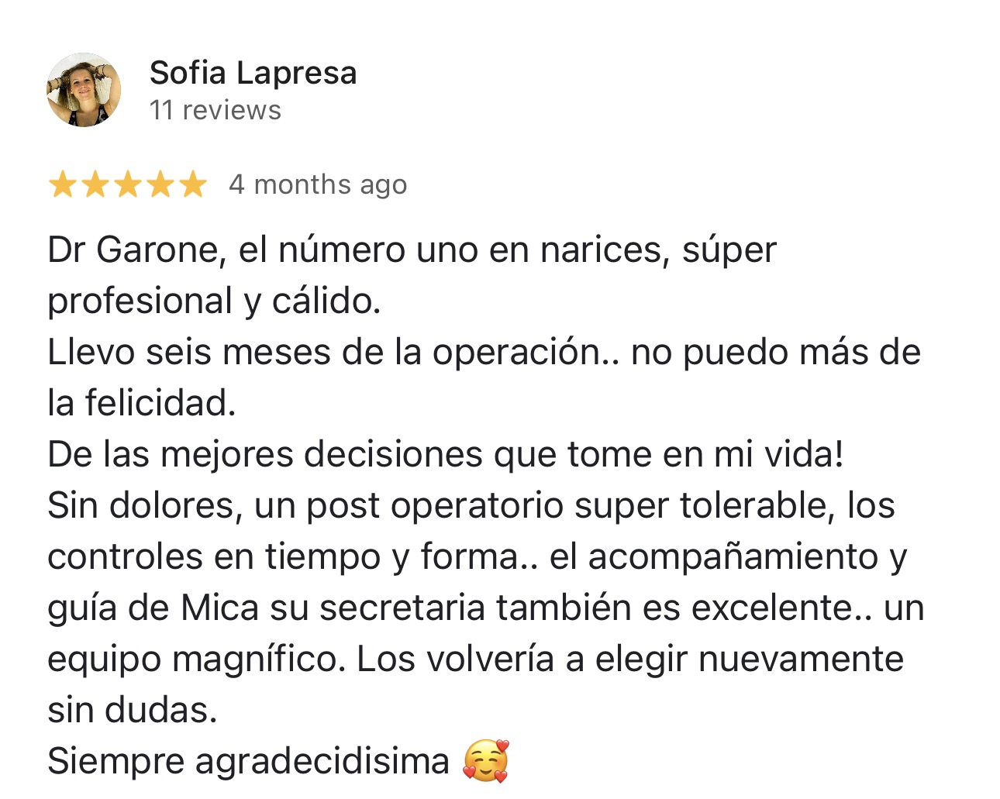

Cirujano Plástico
Médico de Planta en el Hospital Ramos Mejía · Miembro SACPER
Consultorio en Palermo, Buenos Aires
Sobre mí
Cirujano plástico especializado en Rinoplastia Ultrasónica, la técnica de referencia para lograr resultados naturales, precisos y con recuperación más rápida que la rinoplastia tradicional.
Especialidad
Una técnica de precisión que esculpe el hueso nasal con ultrasonido en lugar de instrumental tradicional, respetando los tejidos blandos y logrando resultados más finos, simétricos y naturales.
El ultrasonido esculpe solo el hueso, sin dañar cartílagos ni tejidos circundantes.
Al ser mínimamente invasiva, la recuperación y los moretones se reducen notablemente.
El perfil "Barbie Nose": fino, armónico y a medida de cada rostro.
Resultados
Deslizá para comparar.
* Fotos reales de pacientes. Los resultados pueden variar según cada caso.
Testimonios





Contacto
Escribinos por WhatsApp y coordinamos tu primera consulta.
Escribir por WhatsAppDirección
Fitz Roy 2461, 1D — Palermo, CABA, Argentina
WhatsApp
11 2450-4172